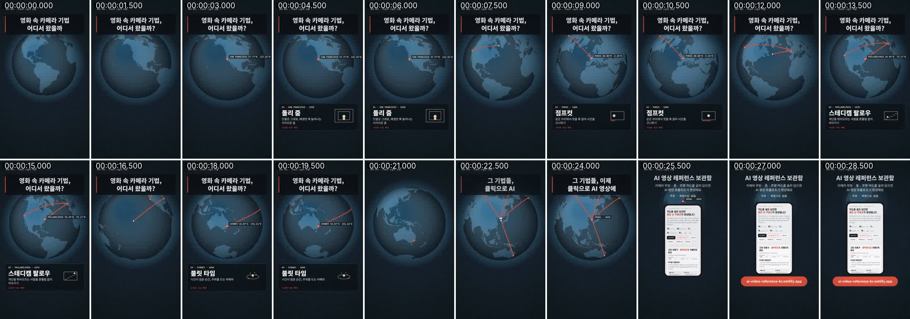

떡상 쇼츠 리버스 엔지니어링, 구조만 뜯어서 내 영상으로
잘 된 쇼츠를 컷 타이밍 · 훅 · 자막 · 소리 · 카메라로 뜯어보고, 같은 틀로 내 제품 영상을 다시 만드는 방법. 무료로 직접 하는 법, AI 채팅으로 하는 법, Claude Code + Hypit 설치 · 사용법과 프롬프트 생성 도구.
요즘 AI 영상 쪽에서 말하는 리버스 엔지니어링은 잘 된 영상을 뜯어서 "왜 끝까지 보게 되는지"를 표로 만들고, 그 틀에 내 제품을 넣어 다시 만드는 작업이에요. 핵심은 구조만 가져오고 화면은 전부 내 것으로 바꾸는 것. 컷이 몇 초마다 넘어가는지, 첫 3초에 무엇을 보여 주는지, 자막이 어디에 어떻게 뜨는지는 가져와도 되지만, 남의 인물 · 화면 · 문구 · 음악 · 브랜드는 가져오면 안 돼요.
이 글 아래에 있는 프롬프트 도구에 참고 영상 링크와 내 제품만 넣으면, 분석 프롬프트와 다시 만드는 프롬프트가 바로 나와요.
무엇을 뜯어보나: 다섯 가지
| 항목 | 적어 둘 것 | 사전 카드 |
|---|---|---|
| 컷 타이밍 | 컷마다 시작–끝 초, 평균 컷 길이, 가장 빠른 구간 | 스크립트 구조 T |
| 첫 3초 훅 | 화면에 처음 보이는 것, 첫 문장, 멈추게 만든 장치 | 훅 문장 H |
| 자막 | 위치(위 · 아래 · 가운데), 크기, 강조 방식, 고정인지 바뀌는지 | 자막 디자인 C |
| 소리 | BGM 박자에 컷이 맞는지, 효과음 위치, 대사의 어느 단어에서 화면이 바뀌는지 | — |
| 화면 | 샷 크기, 카메라 움직임, 전환, 인물 표정 · 연기, 그래픽 | M · X · E · G · F |
특히 "어느 단어에서 화면이 바뀌는가"가 중요해요. 떡상 영상은 대사의 핵심 단어에 맞춰 컷 · 자막 · 효과음이 동시에 바뀌는 경우가 많아요. 그래서 대사를 단어마다 몇 초에 말했는지까지 받아쓰면(단어 타임스탬프) 분석이 훨씬 정확해져요.
방법 1. 무료로 직접: 격자 이미지 + 분석표
도구 없이도 할 수 있어요. 영상을 0.5초 간격으로 잘라 한 장에 모은 격자 이미지를 만들고, 빈 분석표를 채우면 돼요. 컴퓨터에 ffmpeg가 있다면 이 명령 한 줄이면 됩니다(30초 영상 기준, 0.5초 간격 60칸).
ffmpeg -i 참고영상.mp4 -vf "fps=2,scale=180:-1,tile=10x6" 격자.jpg
격자를 보면 화면이 크게 바뀌는 칸이 곧 컷 경계예요. 대사는 유튜브 자막(스크립트 보기)을 복사하거나, 받아쓰기 도구(WhisperX, 일레븐랩스 Scribe 등)로 단어별 시간까지 뽑으면 좋아요. 빈 분석표는 아래 도구에서 복사할 수 있어요.
방법 2. AI 채팅으로: 영상 또는 격자 + 분석 프롬프트
영상 파일이나 링크를 직접 읽는 AI라면 영상을 그대로 넣고, 이미지만 읽는 AI라면 격자 이미지 + 받아쓴 대사를 함께 넣으세요. 그다음 아래 도구가 만들어 주는 분석 프롬프트를 붙이면 컷 표가 나옵니다. 분석 프롬프트에는 이 사전의 카드 코드(M01, X05, C01…)를 컷마다 붙여 달라는 요청이 들어 있어서, 결과를 그대로 레퍼런스 사전에서 찾아 쓸 수 있어요.
방법 3. Claude Code + Hypit: 분석부터 다시 만들기까지
Hypit은 참고 영상을 넣으면 AI 에이전트(Claude Code, Codex 등)가 컷 · 자막 · B롤 · 효과음을 초가 아니라 대사 단어에 맞춰 구조화해 주는 오픈소스예요. 원래는 영상을 끝까지 만들어 주는 도구지만, 분석 기능만 써도 충분히 쓸모 있어요.
- 준비: Claude Code(또는 Codex) 같은 스킬을 쓰는 코딩 에이전트, Node.js 22.15 이상.
- 설치(처음 한 번): 터미널에서 아래 명령을 실행하면 Hypit 스킬이 설치돼요. 실행 파일은 처음 쓸 때 에이전트가 확인하고 준비를 도와줘요.
npx skills add hypit-ai/hypit -g
- 분석만 먼저: Claude Code에서
/hypit으로 시작해 참고 영상 파일(또는 지원되는 플랫폼 링크)을 주고, "아직 아무것도 생성하지 말고 분석만"이라고 적으세요. 대사 받아쓰기는 WhisperX를 쓰는데, 로컬 준비가 번거로우면 에이전트가 호스팅 옵션을 설명해 줘요. - 비용 확인 후 생성: 이미지 · 영상 모델을 부르는 단계부터는 유료예요. Hypit 자체는 무료지만 모델 서비스는 각자 계정 · 요금이 따로 있어요. 에이전트가 예상 비용을 먼저 보여 주니, 예산을 정한 뒤 진행하세요.
라이선스: 내 회사 · 내 고객 작업처럼 직접 쓰는 건 상업적으로도 가능하고, 만든 영상의 권리는 만든 사람에게 있어요. 다만 Hypit 기능을 다른 사람들에게 서비스(SaaS)로 제공하거나 유료로 재배포하려면 별도 상업 라이선스가 필요해요.
예시: 우리 30초 광고를 직접 뜯어봤어요
남의 영상을 예시로 올릴 수는 없어서, 이 사이트를 알리려고 만든 30초 광고 "영화 속 카메라 기법, 어디서 왔을까?"를 방법 1로 뜯어봤어요. 1.5초 간격 격자예요.

| 시간 | 화면 | 자막 | 카드 |
|---|---|---|---|
| 0–3초 | 어두운 지구본이 천천히 돈다 | 위쪽 고정 질문 "영화 속 카메라 기법, 어디서 왔을까?" | H01 질문형 훅 · C01 상단 고정 제목 띠 |
| 3–7초 | 샌프란시스코에 빨간 점 → 아래에 정보 카드 "돌리 줌" | 도시 · 연도 · 기법 이름 · 한 줄 설명 | T18 TOP N 리스트 · C05 단계 · 숫자 배지 |
| 7–21초 | 선이 이어지며 파리 → 필라델피아 → 시드니, 도시마다 같은 카드 | 카드 형식은 그대로, 내용만 바뀜 | G11 라인 드로잉 |
| 21–25초 | 네 도시의 선이 서울로 모인다 | "그 기법들, 이제 클릭으로 AI 영상에" | — (지구본 회전으로 이어 붙임) |
| 25–30초 | 휴대폰 속 사이트 화면 + 주소 버튼 | 사이트 이름 · 주소 | H12 링크 안내 · C08 행동 유도 버튼 |
뽑아낸 구조: 질문 하나로 시작 → 같은 형식의 항목 4개를 약 4초 간격으로 반복 → 모든 선이 한 점(우리 제품)으로 모이며 답 → 링크. 이 틀은 그대로 두고 내용만 바꾸면, 예를 들어 카페라면 "이 원두는 어디서 왔을까? → 산지 4곳 → 우리 매장 블렌드로 모임 → 매장 위치"가 됩니다.
도구: 분석 · 복제 프롬프트 만들기
참고 영상과 내 제품을 넣고 방식을 고르면, 1단계(분석) · 2단계(다시 만들기) 프롬프트가 만들어져요. 1단계 결과(분석표)를 받은 같은 대화에 2단계를 이어서 붙이세요.
그대로 따라 하면 안 되는 것
- 남의 화면 · 인물 · 목소리: 원본 장면을 잘라 쓰거나, 원본 인물과 닮게 만들거나, 목소리를 흉내 내면 안 돼요.
- 문구 · 브랜드 · 음악: 훅 문장은 장치(질문형, 결과 먼저형…)만 가져오고 문장은 새로 쓰세요. 원본 음원은 쓰지 말고 저작권이 정리된 BGM을 쓰세요.
- 효능 · 후기 문구: 화장품 · 식품 광고를 옮길 때 원본의 효능 표현을 그대로 쓰면 표시 · 광고 규정에 걸릴 수 있어요. 내 제품에 근거가 있는 표현만 쓰세요.
구조를 가져올 영상이 필요하면 매일 갱신되는 터진 쇼츠에서 고르세요. 영상마다 '구조 뜯어보기' 버튼을 누르면 이 도구에 링크가 자동으로 채워져요.
자주 묻는 질문
리버스 엔지니어링으로 만든 영상, 올려도 괜찮나요?
컷 길이 · 훅 장치 · 자막 위치 같은 구조는 참고해도 되지만, 원본의 인물 · 화면 · 문구 · 음악 · 브랜드를 그대로 쓰면 도용이 돼요. 화면과 문장은 모두 내 것으로 새로 만들어야 해요.
Hypit은 무료인가요?
Hypit 자체는 무료로 쓸 수 있고 상업적 사용도 가능해요. 다만 이미지 · 영상 · 음성 모델은 각 서비스의 요금이 따로 들고, Hypit 기능을 남에게 서비스로 제공하려면 별도 라이선스가 필요해요.
코딩을 몰라도 할 수 있나요?
네. 격자 이미지와 빈 분석표로 직접 하거나, AI 채팅에 영상(또는 격자 이미지)과 분석 프롬프트를 넣으면 돼요. Claude Code + Hypit은 분석에서 제작까지 한 번에 하고 싶을 때 쓰는 방법이에요.
대사 받아쓰기는 꼭 필요한가요?
말이 있는 영상이라면 있는 게 훨씬 좋아요. 떡상 영상은 핵심 단어에 맞춰 컷 · 자막 · 효과음이 바뀌는 경우가 많아서, 단어별 시간이 있어야 그 리듬을 그대로 옮길 수 있어요.